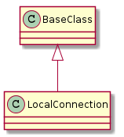
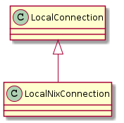

a module to hold a local connection.
The LocalConnection takes the command-line command as a property and the arguments to the command as parameters.
e.g.
lc = LocalConnection()
output = lc.ls('-l')
print output.output
prints the output of the ls -l command line command
This is using subprocess so anything with lots of iperf runs the risk of causing the output to block (i.e. it is file-buffered, not line or character buffered).
In most cases it’s better to use the LocalNixConnection instead which uses Pexpect to avoid the block.
SPACER = '{0} {1} '
UNKNOWN = "Unknown command: "
EOF = ''
SPACE = " "
OutputError = namedtuple("OutputError", 'output error')

LocalConnection([command_prefix]) |
A local connection talks to a local command-line shell. | ||
LocalConnection.queue |
|
||
LocalConnection._procedure_call(command[, ...]) |
This is provided so it can be overriden by subclasses. | ||
LocalConnection._main(command[, arguments, ...]) |
|
||
LocalConnection.__getattr__(command) |
|
Uses pexpect instead of sub-process.

LocalNixConnection(*args, **kwargs) |
A Class that uses Pexpect to get around the problem of file-buffering |
LocalNixConnection.run(command, arguments) |
runs the Pexpect command and puts lines of output on the Queue |